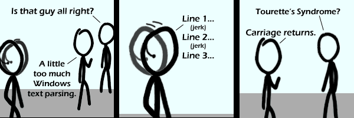

Comic JK 439
When I Feel Like It
⇤
<
?
>
⇥

⇤
<
?
>
⇥
Forum
.
RSS
.
Digg
.
Facebook
.
Reddit
.
Twitter
.
Stumbleupon
Enter your thoughts on number 11999888848484899985.. Syntax Error System reboot ............................................................................................................................. Welcome To Windows LoL please be patient as we delete all of your data......... deleted... Please buy a new copy of windows lol as this one is illegal. System Shutdown And Delete... alt-text FTW! It's 9000 lolz lolzers its totally lol'd Your mother uses CR only. >like a Mac CRLF is totally much more correct, as per codes for traditional serial consoles. LF would move down a line, and CR would move to the beginning of a line. LF only would look like this on an ANSI terminal. > This is true, however, the era of dumb terminals is long long past, and for the sake of easier text processing, it's way better to use LF only. >> I have never had an issue with it. Simply treat CR as white space and LF as the line break. No issues whatsoever, unless you are parsing old Apple CR-only files.